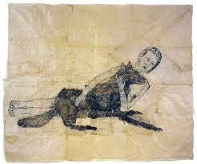

242. Lying with the Wolf. Kiki Smith. 2001 CE Ink and pencil on paper.
- Form
- This is a large, wrinkled drawing pinned to a wall; reminiscent of a tablecloth or a bedsheet
- Context
- Kiki Smith is an American artist who was born in Germany and lives in NYC
- A theme of Smith;s work is the human body; this is a nude female figure
- Female strength is emphasized in the woman lying down with the wild beast
- The wolf sees tamed by the woman’s embrace
- The wolf is traditionally seen as an evil or dangerous symbol, but not here